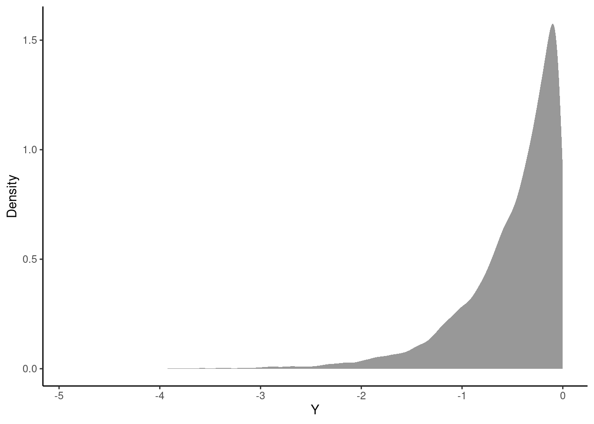
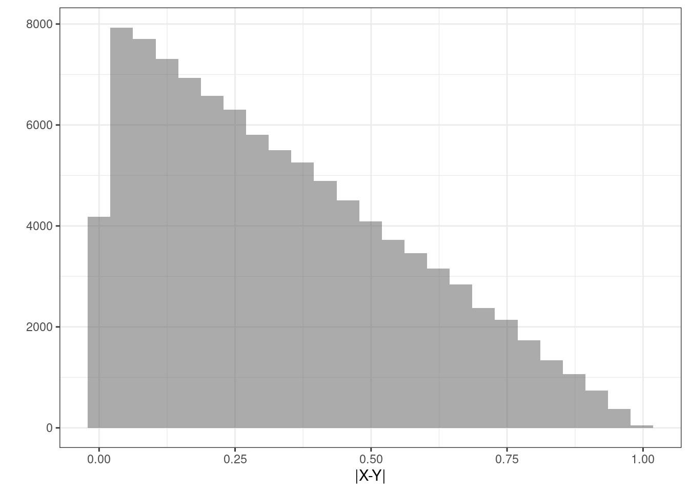

set.seed(1107)
num_sim <- 10000
# select a candidate value between 0 and 1 for x
# then, select another value from 0 to the max of the pdf
# This is our acceptance value
# generate more points than needed (10000*2) to ensure
# enough accepted samples
candidates <- runif(num_sim*2, 0, 1)
u <- runif(num_sim*2, 0, 2)
# create a tibble for candidates and acceptance probabilities
df <- tibble(candidate = candidates, u = u)
# filter out accepted samples based on the acceptance criterion
accepted_samples <- df %>%
filter(u <= 2*candidate) %>%
slice_head(n = num_sim) %>% # ensure exactly n samples
pull(candidate) # use only the accepted candidate values 16 Transformations
16.1 Objectives
Determine the distribution of a transformed discrete random variable using appropriate methods, and use it to calculate probabilities.
Determine the distribution of a transformed continuous random variable using appropriate methods, and use it to calculate probabilities.
Determine the distribution of a transformation of multivariate random variables using simulation, and use it to calculate probabilities.
16.2 Transformations
Throughout our coverage of random variables, we have mentioned transformations of random variables. These have been in the context of linear transformations. We have discussed expected value and variance of linear transformations. Recall that \(\mbox{E}(aX+b)=a\mbox{E}(X)+b\) and \(\mbox{Var}(aX+b)=a^2\mbox{Var}(X)\).
In this chapter, we will discuss transformations of random variables in general, beyond the linear case.
16.2.1 Transformations of discrete random variables
Let \(X\) be a discrete random variable and let \(g\) be a function. The variable \(Y=g(X)\) is a discrete random variable with pmf:
\[ f_Y(y)=\mbox{P}(Y=y)=\sum_{\forall x: g(x)=y}\mbox{P}(X=x)=\sum_{\forall x: g(x)=y}f_X(x) \]
An example would help since the notation can be confusing.
Example:
Suppose \(X\) is a discrete random variable with pmf: \[ f_X(x)=\left\{\begin{array}{ll} 0.05, & x=-2 \\ 0.10, & x=-1 \\ 0.35, & x=0 \\ 0.30, & x=1 \\ 0.20, & x=2 \\ 0, & \mbox{otherwise} \end{array}\right. \]
Find the pmf for \(Y = X^2\).
It helps to identify the support of \(Y\), that is where \(f_{Y}(y)>0\). Since the support of \(X\) is \(S_X=\{-2,-1,0,1,2\}\), the support of \(Y\) is \(S_Y=\{0,1,4\}\).
\[ f_Y(0)=\sum_{x^2=0}f_X(x)=f_X(0)=0.35 \]
\[ f_Y(1)=\sum_{x^2=1}f_X(x)=f_X(-1)+f_X(1)=0.1+0.3=0.4 \]
\[ f_Y(4)=\sum_{x^2=4}f_X(x)=f_X(-2)+f_X(2)=0.05+0.2=0.25 \]
So,
\[ f_Y(y)=\left\{\begin{array}{ll} 0.35, & y=0 \\ 0.4, & y=1 \\ 0.25, & y=4 \\ 0, & \mbox{otherwise} \end{array}\right. \]
It also helps to confirm that these probabilities add to one, which they do. This is the pmf of \(Y=X^2\).
The key idea is to find the support of the new random variable and then go back to the original random variable and sum all the probabilities that get mapped into that new support element.
16.2.2 Transformations of continuous random variables
The methodology above will not work directly in the case of continuous random variables. This is because in the continuous case, the pdf, \(f_X(x)\), represents density and not probability.
16.2.3 Simulation
We can get an estimate of the distribution by simulating the random variable \(Y\).
Example:
From an earlier chapter, let \(X\) be a continuous random variable with \(f_X(x) = 2x\), where \(0\leq x\leq 1\). Find an approximation to the distribution of \(Y = \ln(X)\) using simulation.
We’ll first generate random samples from \(X\). Then, we’ll transform \(X\) to \(Y\), and plot the approximate distribution.
Let’s start by generating random samples from \(X\). We can do this using a method called rejection sampling. Rejection sampling involves generating candidate points from a proposal distribution (usually a uniform distribution, with values between 0 and 1) and accepting them with a certain probability that ensures the desired distribution. To determine the probability of rejection, we essentially check whether a second random number \(u\) is less than or equal to a specific function value. For example, we want values where \(y = 2x\), so we’ll check whether \(u\leq 2x\). An alternative method for this simulation uses the inverse transform method, which requires deriving the cdf.1 Because we have de-emphasized the cdf in this book, we’ll focus on the rejection sampling method.
Now, we’ll transform the values of \(X\) to \(Y\) using \(Y = \ln(X)\).
Y_vals <- log(accepted_samples)Now we can examine the simulated values using inspect() or another favorite function.
inspect(Y_vals)# A tibble: 1 × 10
class min Q1 median Q3 max mean sd n missing
* <chr> <dbl> <dbl> <dbl> <dbl> <dbl> <dbl> <dbl> <int> <int>
1 numeric -4.91 -0.696 -0.347 -0.142 -0.0000466 -0.501 0.504 10000 0Finally, we can plot the approximate distribution. Figure 16.1 is the density plot of the transformed random variable \(Y\) from the simulation. We can see that \(-\infty < y\leq 0\) and the density is tight near zero but skewed to the left.
gf_density(~Y_vals, xlab = "Y", ylab = "Density") %>%
gf_theme(theme_classic())

16.2.4 The pdf method
We are interested in the transformed variable \(Y = g(x)\). In many cases, we want to find the pdf of \(Y\) and use it to calculate probabilities. As long as \(g^{-1}(x)\) is differentiable, we can use the following pdf method to directly obtain the pdf of \(Y\):
\[ f_Y(y) = f_X(g^{-1}(y))\bigg| \frac{\,\mathrm{d}}{\,\mathrm{d}y} g^{-1}(y) \bigg| \]
Note that in some texts, the portion of this expression \(\frac{\,\mathrm{d}}{\,\mathrm{d}y} g^{-1}(y)\) is sometimes referred to as the Jacobian. Note that we need to take the absolute value of the transformation function \(g(x)\). The reason for this is left to the interested learner.2
Exercise:
Let \(X\sim \textsf{Unif}(0,1)\) and let \(Y=X^2\). Find the pdf of \(Y\) using the pdf method.
Since \(X\) has the uniform distribution, we know that \(f_X(x)=1\) for \(0\leq x \leq 1\). Also, \(g(x)=x^2\) and \(g^{-1}(y)=\sqrt{y}\), which is differentiable. So,
\[ f_Y(y)=f_X(\sqrt{y})\bigg|\frac{\,\mathrm{d}}{\,\mathrm{d}y} \sqrt{y}\bigg| = \frac{1}{2\sqrt{y}} \]
16.2.5 The cdf method - OPTIONAL
The cdf method is one of several methods that can be used for transformations of continuous random variables. The idea is to find the cdf of the new random variable and then find the pdf by way of the fundamental theorem of calculus. However, we continue to de-emphasize the cdf in this book, so we will leave the cdf method to the interested learner.
Details of the cdf method
Suppose \(X\) is a continuous random variable with cdf \(F_X(x)\). Let \(Y=g(X)\). We can find the cdf of \(Y\) as:
\[ F_Y(y)=\mbox{P}(Y\leq y)=\mbox{P}(g(X)\leq y)=\mbox{P}(X\leq g^{-1}(y))=F_X(g^{-1}(y)) \]
To get the pdf of \(Y\) we would need to take the derivative of the cdf. Note that \(g^{-1}(y)\) is the function inverse while \(g(y)^{-1}\) is the multiplicative inverse.
This method requires the transformation function to have an inverse. Sometimes we can break the domain of the original random variables into regions where an inverse of the transformation function exists.
Example: Let \(X\sim \textsf{Unif}(0,1)\) and let \(Y=X^2\). Find the pdf of \(Y\).
Before we start, let’s think about the distribution of \(Y\). We are randomly taking numbers between 0 and 1 and then squaring them. Squaring a positive number less than 1 makes it even smaller. We thus suspect the pdf of \(Y\) will have larger density near 0 than 1. The shape is hard to determine so let’s do some math.
Since \(X\) has the uniform distribution, we know that \(f_X(x)\) and \(F_X(x)=x\) for \(0\leq x \leq 1\). So, \[ F_Y(y)=\mbox{P}(Y\leq y)=\mbox{P}(X^2\leq y)=\mbox{P}(X\leq \sqrt{y})=F_X\left(\sqrt{y}\right)=\sqrt{y} \]
Taking the derivative of this yields: \[ f_Y(y)=\frac{1}{2\sqrt{y}} \]
for \(0 < y \leq 1\) and 0 otherwise. Notice we can’t have \(y=0\) since we would be dividing by zero. This is not a problem since we have a continuous distribution. We could verify this a proper pdf by determining if the pdf integrates to 1 over the domain: \[ \int_0^1 \frac{1}{2\sqrt{y}} \,\mathrm{d}y = \sqrt{y}\bigg|_0^1 = 1 \] We can also do this using R but we first have to create a function that can take vector input.
y_pdf <- function(y) {1/(2*sqrt(y))}y_pdf<- Vectorize(y_pdf)integrate(y_pdf, 0, 1)1 with absolute error < 2.9e-15Notice that since the domain of the original random variable was non-negative, the squared function had an inverse.
The pdf of the random variable \(Y\) is plotted in Figure 16.2.
gf_line(y_pdf(seq(0.01, 1, 0.01)) ~ seq(0.01, 1, 0.01),
xlab = "Y", ylab = expression(f(y))) %>%
gf_theme(theme_bw())
We can see that the density is much larger at we approach 0.
16.2.6 Multivariate Transformations
For the discrete case when we have the joint pmf, the process is similar to what we learned above if the transformation is to a univariate random variable. For continuous random variables, the mathematics are a little more difficult so we will just use simulation.
Here’s the scenario. Suppose \(X\) and \(Y\) are independent random variables, both uniformly distributed on \([5,6]\). \[ X\sim \textsf{Unif}(5,6)\hspace{1.5cm} Y\sim \textsf{Unif}(5,6) \]
Let \(X\) be your arrival time for dinner and \(Y\) your friends arrival time. We picked 5 to 6 because this is the time in the evening we want to meet. Also assume you both travel independently.
Define \(Z\) as a transformation of \(X\) and \(Y\) such that \(Z=|X-Y|\). Thus \(Z\) is the absolute value of the difference between your arrival times. The units for \(Z\) are hours. We would like to explore the distribution of \(Z\). We could do this via Calculus III (multivariable calculus) methods, but we will use simulation instead.
We can use R to obtain simulated values from \(X\) and \(Y\) (and thus find \(Z\)).
Exercise:
First, simulate 100,000 observations from the uniform distribution with parameters 5 and 6. Assign those random observations to a variable. Next, repeat that process, assigning those to a different variable. These two vectors represent your simulated values from \(X\) and \(Y\). Finally, obtain your simulated values of \(Z\) by taking the absolute value of the difference.Try to complete the code on your own before looking at the code below.
set.seed(354)
# generate two values between 5 and 6 from a random uniform distribution
# do this 100,000 times
results <- do(100000)*abs(diff(runif(2, 5, 6)))head(results) abs
1 0.03171229
2 0.77846706
3 0.29111599
4 0.06700434
5 0.08663187
6 0.40622840Figure 16.3 is a plot of the estimated density of the transformation.
results %>%
gf_density(~abs) %>%
gf_theme(theme_bw()) %>%
gf_labs(x="|X-Y|",y="")Figure 16.4 is a plot of the estimated density of the transformation as a histogram.
results %>%
gf_histogram(~abs)%>%
gf_theme(theme_bw()) %>%
gf_labs(x="|X-Y|",y="")

inspect(results)
quantitative variables:
name class min Q1 median Q3 max mean
1 abs numeric 1.265667e-06 0.133499 0.2916012 0.4990543 0.9979459 0.332799
sd n missing
1 0.2358863 100000 0Exercise:
Now suppose whomever arrives first will only wait 5 minutes and then leave. What is the probability you eat together?
data.frame(results) %>%
summarise(mean(abs<=5/60)) mean(abs <= 5/60)
1 0.15966Exercise:
How long should the first person wait so that there is at least a 50% probability of you eating together?
We leave the solution to the interested learner.3
To sample from a non-uniform distribution using inverse transform sampling, we generate a uniform random variable \(U\) on the interval \([0, 1]\). Then, we use the cdf of \(X\) to find the inverse, \(X = F^{-1}(U)\). For \(f(x) = 2x\), the cdf is \(F(x) = x^2\) and the inverse cdf is \(F^{-1}(u) = \sqrt{u}\). So, we take the square root of the random uniform values generated to get values of \(X\). Finally, we transform those values to \(Y\). In this case, we take the natural logarithm, \(Y = \ln(X)\). We can then plot and analyze the distribution of \(Y\).↩︎
We need to take the absolute value of the transformation function \(g(x)\) because if it is a decreasing function, we have
\[ F_Y(y)=\mbox{P}(Y\leq y)=\mbox{P}(g(X) \leq y)=\mbox{P}(X \geq g^{-1}(y))= 1 - F_X(g^{-1}(y)) \]↩︎
Let’s write a function to find the cdf.
z_cdf <- function(x) {mean(results$abs <= x)}z_cdf <- Vectorize(z_cdf)Now test for 5 minutes to make sure our function is correct since we determined above that this value should be 0.15966.
z_cdf(5/60)[1] 0.15966Let’s plot to see what the cdf looks like.
gf_line(z_cdf(seq(0, 1, 0.01)) ~ seq(0, 1, 0.01), xlab = "Time Difference", ylab = "CDF") %>% gf_theme(theme_bw())It looks like somewhere around 15 minutes, a quarter of an hour. But we will find a better answer by finding the root. In the code that follows we want to find where the cdf equals 0.5. The function
uniroot()solves the given equations for roots so we want to put in the cdf minus 0.5. In other words,uniroot()solves \(f(x)=0\) for x.uniroot(function(x) z_cdf(x) - 0.5, c(0.25, 35))$root[1] 0.2916077So it is actually 0.292 hours, 17.5 minutes. So round up and wait 18 minutes.↩︎